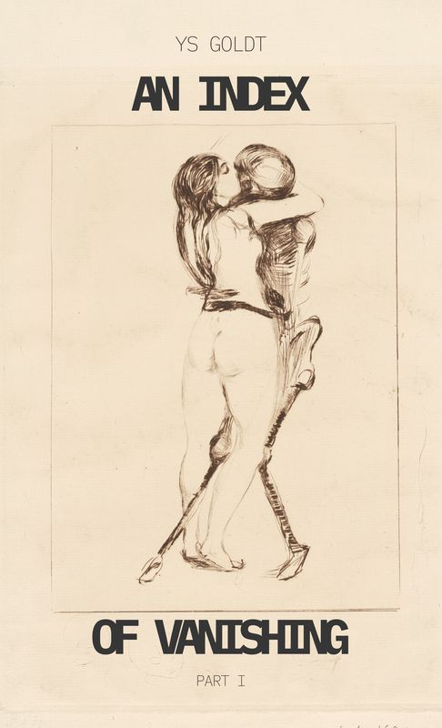

Novella
An Index of Vanishing — Part I
Tibet, 1938. Matthias Krüger was sent to watch the Reich’s most classified asset. He never expected her to see him.
A slow-burn historical romance about obsession, longing, and the cost of being seen.
- Print length
- 110 pages
- ISBN
- 9798996205219